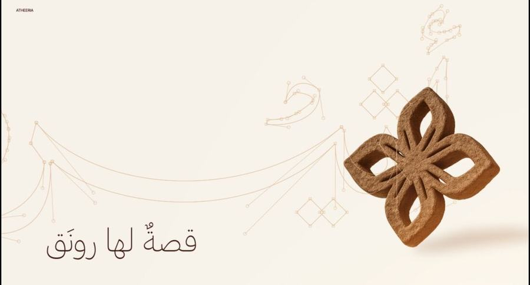
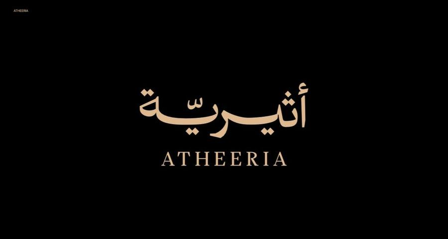

أثيرية
Atheeria
بناء الهوية · التوجيه الإبداعي · 0→1
Brand Identity · Creative Direction · 0→1
النتيجةResult
تحويل فكرة حالِمة لمشروع طموح عبر فهم العميل وتوجيه العلامة لشكلها الأخير، من بناء الهويّة التصميم وحتى إعلان إطلاق العلامة.
Turning a dream of an idea into an ambitious project by understanding the client and directing the brand towards its final form: from building its visual identity to launching the brand.
العلامة التجارية قصّة شخصية تنتظر أن تُبنى لتحيا.
A brand is a personal story waiting to be built into life.